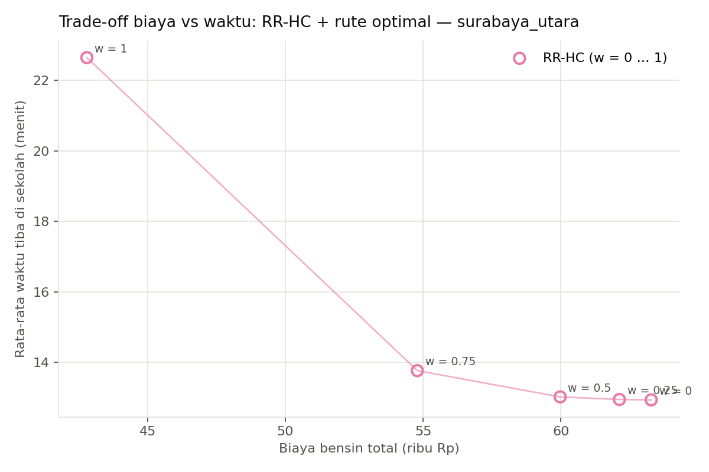
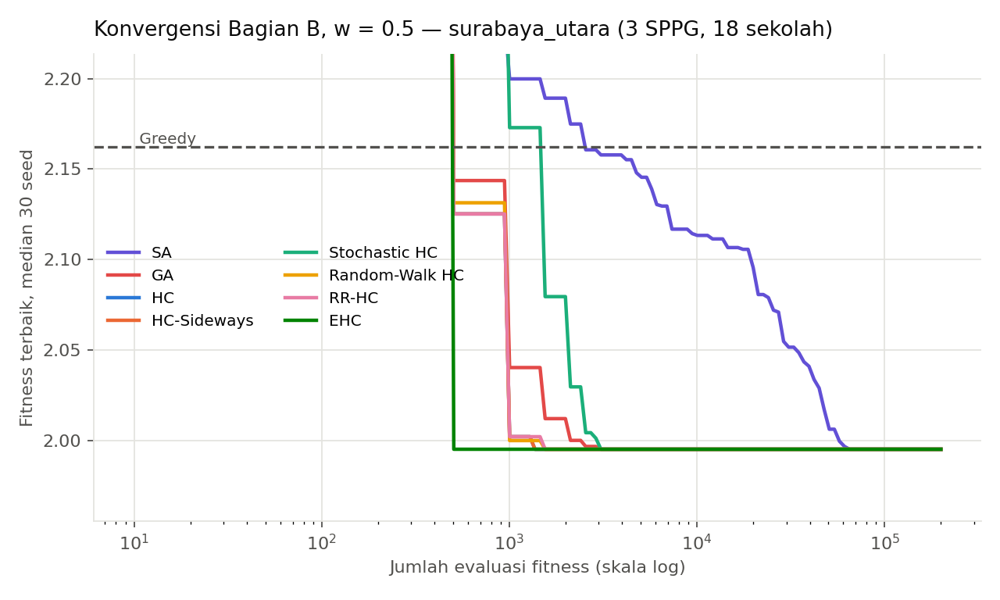
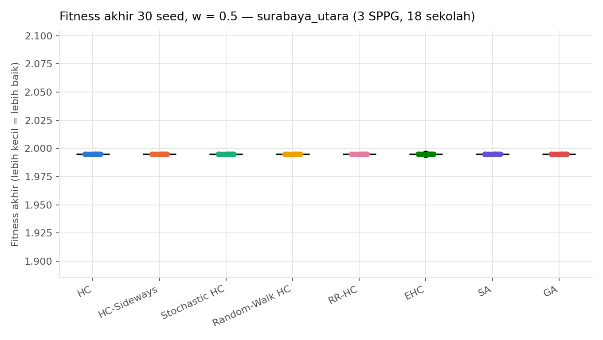
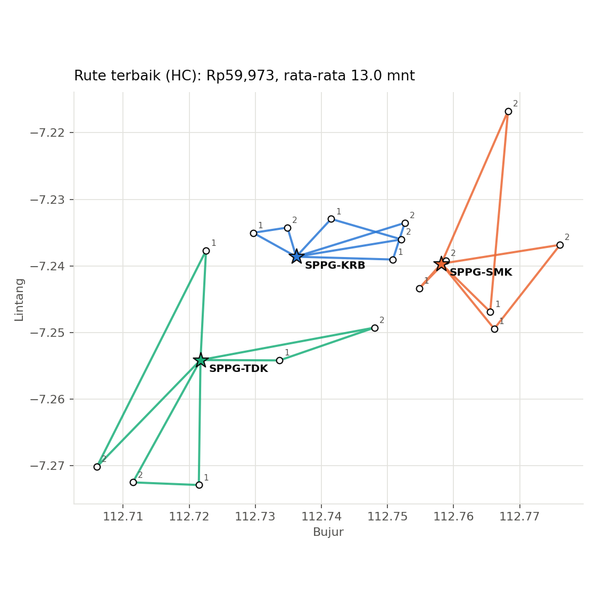
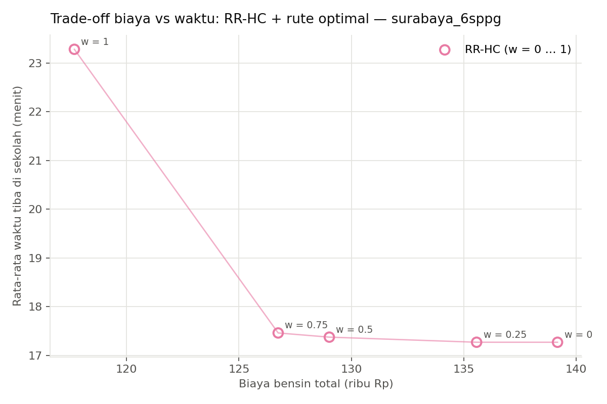
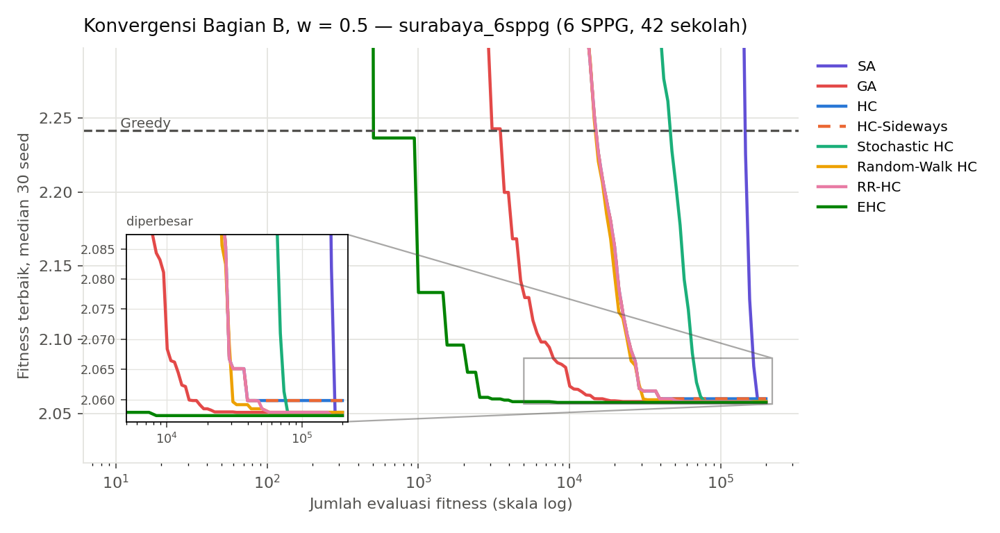
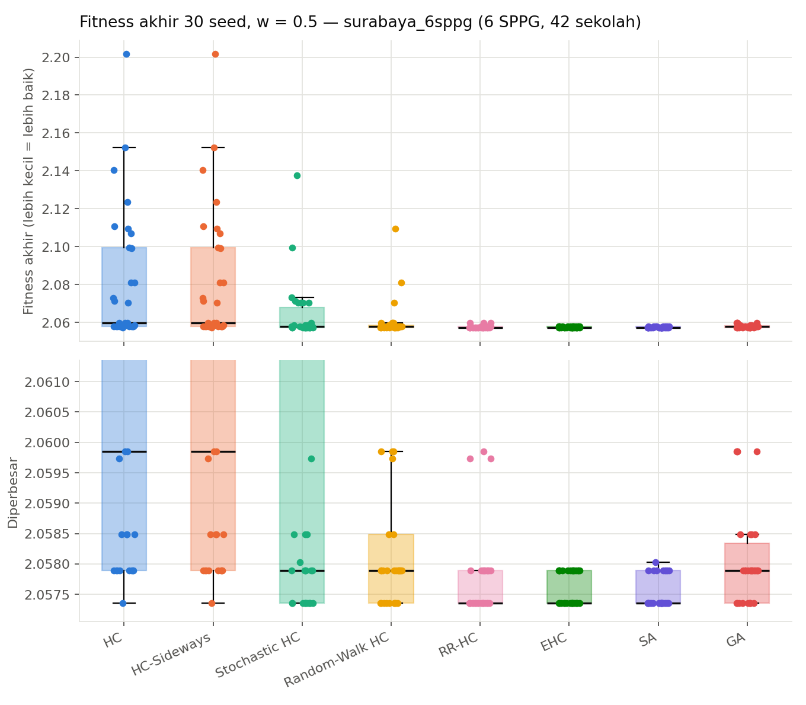

Optimasi Distribusi MBG di Surabaya
Pengiriman Makan Bergizi Gratis dari SPPG (dapur) ke sekolah memakai Granmax, dimodelkan sebagai Multi-Depot Vehicle Routing Problem bi-objektif (biaya bensin & waktu tiba), dipecah menjadi dua case independen:
- Case 1 — alokasi SPPG: sekolah mana dilayani SPPG mana. Dibandingkan: Hill Climbing, Simulated Annealing, Genetic Algorithm (pencarian lokal, Kuliah 6).
- Case 2 — rute terbaik: urutan kunjungan Granmax di dalam satu SPPG. Dibandingkan: Uniform-Cost Search, A*, DFS (branch and bound), BFS, Greedy best-first (pencarian, Kuliah 2 & 3).
- Data: sekolah dari OpenStreetMap, lokasi SPPG dari berita (koordinat perkiraan), jarak & waktu tempuh jalan asli dari OSRM.
Case 2 — skalabilitas pencarian rute (semua ukuran sub-masalah)
UCS, A* dan DFS (branch and bound) selalu optimal; BFS dan Greedy best-first tidak. A* mengekspansi node jauh lebih sedikit seiring k membesar karena heuristik Hungaria (h2).


surabaya_utara · 3 SPPG, 18 sekolah
Case 1 — Alokasi SPPG → sekolah (Hill Climbing, Simulated Annealing, Genetic Algorithm)
| Algoritma | Fitness (mean ± std) | Biaya bensin | Rata-rata tiba | Waktu/run |
|---|---|---|---|---|
| HC | 1.9951 ± 0.0000 | Rp59,973 | 13.0 mnt | 0.1 s |
| SA | 1.9951 ± 0.0000 | Rp59,973 | 13.0 mnt | 7.4 s |
| GA | 1.9951 ± 0.0000 | Rp59,973 | 13.0 mnt | 10.4 s |
Bobot w = 0.5, 30 seed, 200,000 evaluasi per run. Fitness lebih kecil = lebih baik. Rute tiap SPPG selalu dihitung optimal (Router), jadi fitness di atas murni mengukur kualitas alokasi.








Case 2 — Rute terbaik di dalam satu SPPG (UCS, A*, DFS, BFS, Greedy)
| Algoritma | Status | Gap rata-rata | Node diekspansi (total) | Waktu (total) |
|---|---|---|---|---|
| UCS | optimal | 0.0% | 2,448 | 10.6 ms |
| A* | optimal | 0.0% | 210 | 20.8 ms |
| DFS | optimal | 0.0% | 6,417 | 15.2 ms |
| BFS | 0% optimal | 72.1% | 3,048 | 9.5 ms |
| Greedy | 0% optimal | 72.9% | 24 | 2.9 ms |
Diagregasi dari semua SPPG di instance ini (sub-masalah nyata: sekolah milik tiap SPPG pada penugasan terbaik Case 1) — sub-masalah nyata dianimasikan di surabaya_utara/animasi.html#stage=2 (SPPG terbesar, penugasan terbaik HC). UCS, A* dan DFS (branch and bound) menjamin rute optimal; BFS menjamin jumlah Granmax paling sedikit (bukan termurah); Greedy (best-first) tercepat tapi tidak menjamin optimal.
surabaya_6sppg · 6 SPPG, 42 sekolah
Case 1 — Alokasi SPPG → sekolah (Hill Climbing, Simulated Annealing, Genetic Algorithm)
| Algoritma | Fitness (mean ± std) | Biaya bensin | Rata-rata tiba | Waktu/run |
|---|---|---|---|---|
| HC | 2.0818 ± 0.0355 | Rp135,278 | 17.5 mnt | 1.1 s |
| SA | 2.0575 ± 0.0003 | Rp129,187 | 17.4 mnt | 58.1 s |
| GA | 2.0581 ± 0.0008 | Rp130,022 | 17.4 mnt | 19.8 s |
Bobot w = 0.5, 30 seed, 200,000 evaluasi per run. Fitness lebih kecil = lebih baik. Rute tiap SPPG selalu dihitung optimal (Router), jadi fitness di atas murni mengukur kualitas alokasi.







Case 2 — Rute terbaik di dalam satu SPPG (UCS, A*, DFS, BFS, Greedy)
| Algoritma | Status | Gap rata-rata | Node diekspansi (total) | Waktu (total) |
|---|---|---|---|---|
| UCS | optimal | 0.0% | 15,255 | 68.6 ms |
| A* | optimal | 0.0% | 716 | 78.2 ms |
| DFS | optimal | 0.0% | 130,141 | 315.3 ms |
| BFS | 0% optimal | 44.8% | 16,262 | 76.3 ms |
| Greedy | 0% optimal | 40.9% | 125 | 9.7 ms |
Diagregasi dari semua SPPG di instance ini (sub-masalah nyata: sekolah milik tiap SPPG pada penugasan terbaik Case 1) — sub-masalah nyata dianimasikan di surabaya_6sppg/animasi.html#stage=2 (SPPG terbesar, penugasan terbaik HC). UCS, A* dan DFS (branch and bound) menjamin rute optimal; BFS menjamin jumlah Granmax paling sedikit (bukan termurah); Greedy (best-first) tercepat tapi tidak menjamin optimal.